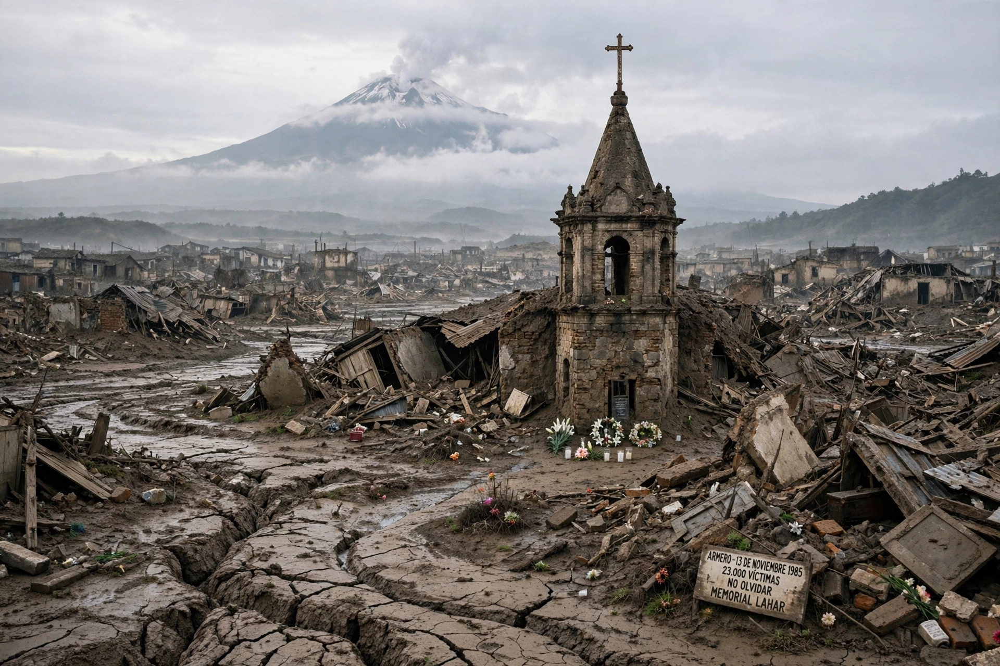

Armero is a municipality in the Tolima Department of Colombia. It is infamous as the site of the former town destroyed on 13 November 1985 by lahars from the eruption of the Nevado del Ruiz volcano — the Armero tragedy, one of the deadliest volcanic disasters in history.

| Armero | |
|---|---|
| Country | Colombia |
| Department | Tolima |
| Founded | 1895 (as San Lorenzo) |
After months of precursory activity, Nevado del Ruiz erupted on the night of 13 November 1985. Pyroclastic flows melted summit ice, sending mudflows (lahars) down river valleys. Armero, built on an old lahar deposit, was buried under metres of mud; around 20,000–23,000 of its roughly 29,000 inhabitants died, and total deaths across the region reached about 25,000. Thirteen-year-old Omayra Sánchez, trapped in debris for three days, became a symbol of the disaster and of failures in evacuation and warning.
The town was never rebuilt; survivors were resettled, many in nearby Armero-Guayabal, the present municipal seat. The ruins are maintained as a memorial and pilgrimage site. The disaster spurred creation of Colombia's national disaster-management system and advances in volcano monitoring worldwide.